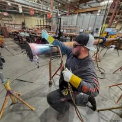

Home › About Us
About Plumbers Boynton Beach
A straightforward way to reach a licensed local plumber, with the price agreed before the work starts.
Who we are
Local Plumbers, Plain Pricing, Fast Answers
Plumbers Boynton Beach exists to solve one problem: finding a plumber you can actually reach, who will tell you what the job costs before starting it. That sounds basic. Anyone who has waited three days for a callback knows it is not.
We connect homeowners across Boynton Beach and Palm Beach County with licensed, insured plumbers who work this area every day. Someone answers the phone. You get a price range on the call and a written flat price at the door.
The plumbers who come out carry current Florida licenses and liability insurance. They arrive in stocked trucks, so a routine repair does not turn into a parts run and a second visit.

How we operate
Four Standards We Hold Every Plumber To
Licensed and insured
Current Florida license and liability coverage, verified before any plumber is dispatched to your address.
Written flat pricing
A single number for the job, agreed before tools come out. No hourly meter and no add-ons at the end.
Proof of the work
Camera footage on drain and sewer jobs, photos of what failed, and an emailed invoice listing parts and labor.
Clean exits
Drop cloths, shoe covers, old fixtures hauled away and the work area left the way it was found.

Our service area
Built Around Palm Beach County Plumbing
Working one region well beats covering three counties badly. Our plumbers know that homes east of Federal Highway fight salt air, that mid-century slab construction hides copper leaks, and that most of the county's water is hard enough to shorten a water heater's life by years.
That knowledge shows up in small ways. A plumber who checks the anode rod without being asked. One who recommends a drain pan in a humid garage. One who cameras a main line instead of selling a fourth cabling in twelve months.
We serve Boynton Beach, Delray Beach, Boca Raton, West Palm Beach, Lake Worth Beach, Lantana, Hypoluxo, Ocean Ridge, Manalapan, Highland Beach, Greenacres, Palm Springs and Wellington.
FAQs
About Our Service
Are the plumbers employees or independent contractors?
The plumbers who arrive at your home are independent licensed contractors. This site connects homeowners with them and holds them to the standards described above.
How do I verify a license?
Ask for the license number at the door and check it against the Florida Department of Business and Professional Regulation. Any legitimate plumber expects this question.
Do you work on commercial property?
Yes, including restaurants, offices, salons and multi-unit residential buildings.
How long have you served Boynton Beach?
Our network of local plumbers has worked Palm Beach County for years, and the crews assigned here live and work in the area.
What to expect
What Happens When You Call a Boynton Beach Plumber Here
The experience is deliberately boring, in the sense that nothing surprising happens. Here is the whole sequence.
The phone call
A person answers and asks diagnostic questions: which fixtures are affected, whether more than one backs up at once, how long it has been happening, whether it has been repaired before. Those answers determine which plumber is sent and what equipment rides along. You get a realistic price range and an arrival window before you hang up.
At the door
Your plumber introduces himself, puts on shoe covers and asks to see the problem rather than quoting from the driveway. Ask for the license number here. Any legitimate plumber expects the question and can produce it.
The diagnosis
Inspection comes before pricing, always. On drain and sewer work that means a camera. On hidden leaks it means acoustic and thermal equipment. On water heaters it means testing elements, thermostats, the gas valve and the anode rod rather than assuming the tank is finished.
The written price
You get one flat number for the job, on paper, with the warranty terms attached. You approve it or you do not. Nothing is opened, pulled or cut before that.
After the work
The repair is tested in front of you, the area is cleaned, old parts leave with the truck, and the invoice arrives by email listing parts, labor and coverage. On drain and sewer jobs the camera footage comes with it.
Our approach
Why We Recommend Repairs Before Replacements
Plumbing has a reputation problem, and most of it comes from being sold a replacement when a repair would have done. We work the other way around, and there is a practical reason beyond ethics.
A homeowner who was talked into a new water heater when a thermostat had failed does not call again. A homeowner who was told the truth calls for the repipe three years later, and tells a neighbor in between. The economics of an honest recommendation are simply better over time.
So the rule is straightforward. Under eight years old with a sound tank and a failed component, we repair. Past twelve years, or with visible tank corrosion, we recommend replacement and explain exactly why. Between those points we price both and let you decide with real numbers in front of you.
The same logic applies to drains. If a camera shows sound pipe that needs cleaning, that is what we say. If it shows a separated joint or roots through a crack, we say that instead, and we show you the footage rather than asking you to take our word for it.
Ready to book a plumber?
Call for a live answer, a flat price and a same-day window anywhere in Palm Beach County.